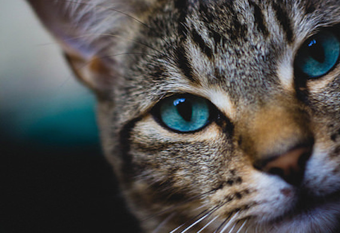

The cat (Felis catus) is a small carnivorous mammal. It is the only domesticated species in the family Felidae and often referred to as the domestic cat to distinguish it from wild members of the family. The cat is either a house cat, a farm cat or a feral cat; latter ranges freely and avoids human contact. Domestic cats are valued by humans for companionship and for their ability to hunt rodents. About 60 cat breeds are recognized by various cat registries.
